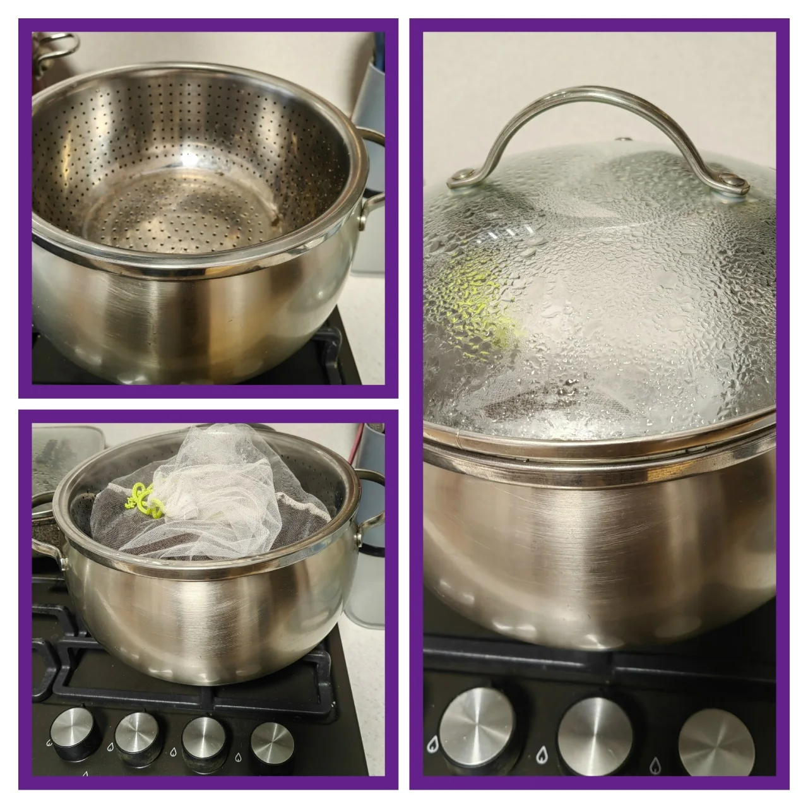

Домашние цветы очень чувствительны к грибковым заболеваниям, ими любят полакомиться и различные вредители (трипсы, клещи, мучнистый червец, щитовка...).
Даже если вы купили грунт в садовом центре или заказали на ВБ, Озоне, нет никакой гарантии, что в нем нет споров грибков и личинок вредителей, а уж личинки грибного комарика, который портит нам жизнь, есть практически в любом грунте.
Вот для этого и нужна обработка, чтобы потом не пришлось бороться с нашествием этих непрошенных гостей.
Кто-то промораживает грунт, кто-то прокаливает его в духовке, кто-то проливает кипятком.
Я поделюсь своим способом — пропариванием на водяной бане. Этот способ считается одним из самых щадящих и эффективных.
Нам понадобится:
1⃣ большая кастрюля
2️⃣ дуршлаг или сито
3️⃣ марля (я использую перфорированный мешочек для хранения лука)
Наливаю в кастрюлю воду, помещаю в неё дуршлаг, уровень воды не должен касаться дна дуршлага, потом мешочек с грунтом.
Чтобы создать эффект паровой камеры и прогреть грунт равномерно, кастрюлю накрываю крышкой и ставлю на плиту. Время процедуры — 15-20 минут.
Высокая температура убивает не только вредные, но и полезные микроорганизмы, поэтому после пропаривания, когда грунт остынет, его нужно "оживить": пролить, например, Фитоспорином-М или Триходермином (чем то одним, их лучше не смешивать).
Это заселит грунт полезной микрофлорой, которая будет защищать фиалку от болезней.
Обязательно добавляйте в грунт разрыхлители, храните его правильно, чтобы торф "дышал", плотно не закрывайте ёмкость, в котором он хранится, иначе он может заплесневеть.
Я поделилась с вами информацией, как делаю я. Хотелось бы услышать от вас, как вы обеззараживаете грунт, может есть способ лучше, проще. Буду рада, если в комментариях поделитесь со мной.
Всем удачи в выращивании и здоровых, красивых фиалочек.
